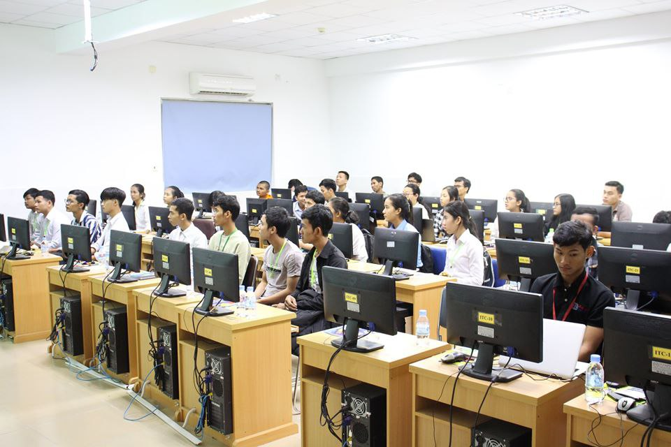
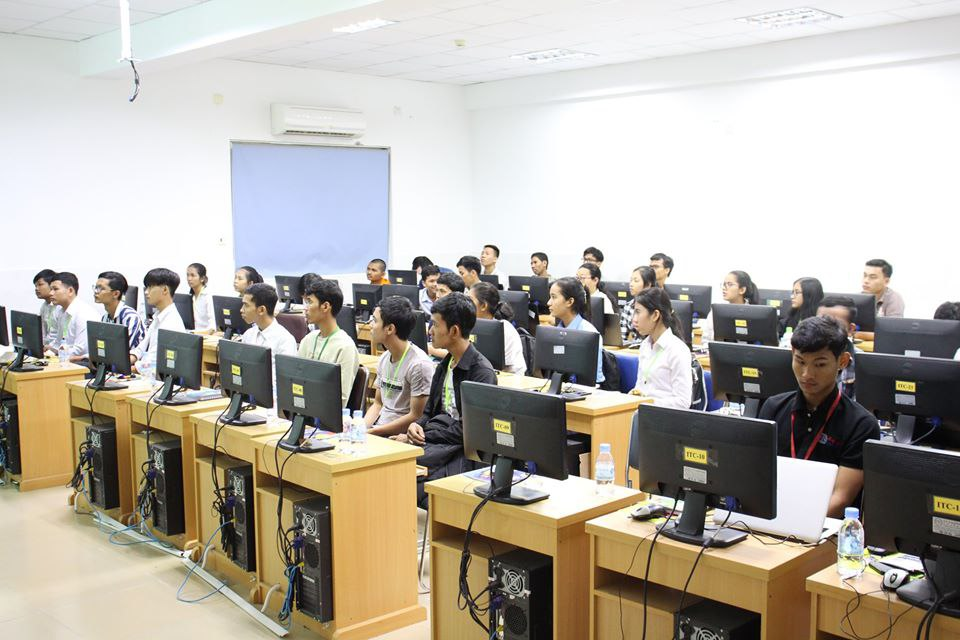

College of Science and Technology
Welcome to the College of Science and Technology at The University of Cambodia. Our college offers a variety of programs designed to prepare students for successful careers in technology and beyond. With a focus on innovation and practical experience, we aim to provide our students with the skills and knowledge they need to excel in their chosen fields.


For everyone who wishes to pursue for nay AA and BA degreese of the study programs. please register now or vist the campus of The University of Camboida.
Majors offerning in College of Science Technology
| Majors | Associate, Bachelor | Master, PhD |
|---|---|---|
| Computer Science (Offering) | AA and BA | MS and PhD |
| Information Technology (Offering) | BA | AA |
| Electronics and Telecommunication (Not yet offering) | BA | AA |

News
60% Special scholars for general students and 70% for officials and teachers under the crown Educate young people and sports without passing the exams for a new course, course 3 awaits you! Start receiving receipts from this publishing date to the new course to enroll on Monday, July 15, 2014. For more information please contact the telephone number: 069 659,609 / 070,351,738 (Telegram). Thank you!

Computer Science
Welcome to College of Science and Technology of The University of Cambodia. For everyone who wishes to pursue for any AA and BA degrees of the study programs, please register now or visit the campus of The University of Cambodia.
Computer science focuses on the development and testing of software and software systems. It involves working with mathematical models, data analysis and security, algorithms, and computational theory. Computer scientists define the computational principles that are the basis of all software.
Student Outcomes:
Our learning outcomes are statements that describe skills that we expect to enable our student to attain by the time of graduation.
1. An ability to apply mathematics to solving computing problems.
2. An ability to critically analyze a problem and to design, implement, and evaluate a computing solution that meets requirements.
3. An ability to work effectively in small groups on medium scale computing projects.
4. An ability to effectively communicate technical concepts in oral and written form.
5. An ability to understand the social and ethical implications of working as a professional in the field of computer science.
6. An ability to use current tools and methodologies in computing practice.
Section & Time
| MONDAY - FRIDAY | MORNING | AFTERNOON | EVENING |
|---|---|---|---|
| 8:00 - 11:15 AM | 2:00 - 5:15 PM | 5:45 - 8:45 AM | |
| SATURDAY - SUNDAY | MORNING | AFTERNOON | |
| 7:30 - 12:15 AM | 1:00 - 4:15 PM |
Information Technology
Welcome to College of Science and Technology of The University of Cambodia. For everyone who wishes to pursue for any AA and BA degrees of the study programs, please register now or visit the campus of The University of Cambodia.
Information technology (IT) is a set of related fields that encompass computer systems, software, programming languages and data and information processing and storage. IT forms part of information and communications technology (ICT)
Student Outcomes:
1. Analyze a complex computing problem and to apply principles of computing and other relevant disciplines to identify solutions.
2. Design, implement and evaluate a computing-based solution meeting computing requirements in the context of the program’s discipline.
3. Communicate effectively in a variety of professional contexts.
4. Recognize professional responsibilities and make informed judgments in computing practice based on legal and ethical principles.
5. Function effectively as a member or leader of a team engaged in activities appropriate to the program’s discipline.
6. Identify and analyze user needs to apply in the selection, creation, integration, evaluation, and administration of computing-based systems.
Section & Time
| MONDAY - FRIDAY | MORNING | AFTERNOON | EVENING |
|---|---|---|---|
| 8:00 - 11:15 AM | 2:00 - 5:15 PM | 5:45 - 8:45 AM | |
| SATURDAY - SUNDAY | MORNING | AFTERNOON | |
| 7:30 - 12:15 AM | 1:00 - 4:15 PM |
Electronics and Telecommunications
Welcome to College of Science and Technology of The University of Cambodia. For everyone who wishes to pursue for any AA and BA degrees of the study programs, please register now or visit the campus of The University of Cambodia.
Electronics and telecommunications engineering is a modern engineering discipline that deals with designing, fabricating, producing, testing and supervising the manufacturing process of complex electronic products and systems
Student Outcomes:
1. Students will become the electronic and telecommunication engineers with good basic knowledge, both in theory and in experiments.
2. Students master the methodology for conducting research, have critical thinking and creativity; have ability of self-learning and studying electronics and telecommunications at graduate level.
3. Students are able to design, implement the electronic equipment, operate the telecommunication systems; manage, consult, and provide technical support on electronic and telecommunication products and projects.
4. Students have ability to work independently as well as together in groups in high pressure environment; ability to develop and integrate in high quality job market.
5. Students are trained to be electronic and telecommunication engineers with good specialized knowledge as well as good health and professional ethics.
Section & Time
| MONDAY - FRIDAY | MORNING | AFTERNOON | EVENING |
|---|---|---|---|
| 8:00 - 11:15 AM | 2:00 - 5:15 PM | 5:45 - 8:45 AM | |
| SATURDAY - SUNDAY | MORNING | AFTERNOON | |
| 7:30 - 12:15 AM | 1:00 - 4:15 PM |
Graphic Design And Multimedia
Welcome to College of Science and Technology of The University of Cambodia. For everyone who wishes to pursue for any AA and BA degrees of the study programs, please register now or visit the campus of The University of Cambodia.
Graphic Design and Multimedia focus on visual communication in that different messages are conveyed through design used in print publications and multimedia. he Graphic Design and Multimedia Arts program of study explores the occupations and educational opportunities associated with designing or creating graphics to meet specific commercial or promotional needs, such as packaging, displays, or logos. This program of study may also include exploration into designing clothing and accessories, and creating special effects, animation, or other visual images using film, video, computers, or other electronic tools and media, for use in computer games, movies, music videos, and commercials.
Program Learning Outcomes:
1. Conceptualize and develop design solutions using principles of design to create visual communications that meet the needs of the project.
2. Employ the design process to create design solutions that meet the project objectives and the needs of the client and/or user.
3. Plan, create and use photography, illustration and typography in design layouts to meet the requirements of the creative brief.
4. Design, develop and create a variety of media products using relevant, current and/or emerging technologies.
5. Communicate ideas, design concepts and opinions clearly and persuasively to others.
6. Use recognized industry practices throughout the design process and related business tasks.
7. Plan, implement, and evaluate graphic design projects using project management skills to deliver quality work to clients according to schedule and within budget.
8. Complete all work in a professional and ethical manner, and in accordance with all applicable legislation and regulations.
Section & Time
| MONDAY - FRIDAY | MORNING | AFTERNOON | EVENING |
|---|---|---|---|
| 8:00 - 11:15 AM | 2:00 - 5:15 PM | 5:45 - 8:45 AM | |
| SATURDAY - SUNDAY | MORNING | AFTERNOON | |
| 7:30 - 12:15 AM | 1:00 - 4:15 PM |
Business Management Information Technology
Our Information Technology Management for Business (ITMB) degree covers a vibrant mix of transferable skills and knowledge for those who want exciting and challenging management or professional careers designing, developing and implementing technology solutions for businesses. The ITMB degree is designed to offer an insight into the real world of IT. It allows you to learn the people and project management skills required to be a successful IT professional.
Program Learning Outcomes:
As a graduate, you will be prepared to reliably demonstrate the ability to:
1-Analyze business problems and make ethically sound strategic decisions enabled by Information Technology (IT).
M2-anage a business technology project within a cross-functional and multi-disciplinary team by applying project management principles.
3-Adopt operations management principles and information technology to improve efficiency and effectiveness of business processes.
4-Propose strategic and operational solutions by applying principles of management accounting and financial analysis.
5-Design information technology solutions that automate and support business processes.
6-Model ethical, legal and professional codes of conduct of the Canadian business environment and global marketplace.
7-Build data solutions to support business operations, strategic decision making and business planning to improve organizational performance and ensure adequate risk management.
8-Evaluate organizational structures and management processes, with a focus on small and medium-sized enterprises, to improve organizational performance.
9-Provide direction about the opportunities for the integration of technology, commerce and marketing to support innovative digital business models.
Section & Time
| MONDAY - FRIDAY | MORNING | AFTERNOON | EVENING |
|---|---|---|---|
| 8:00 - 11:15 AM | 2:00 - 5:15 PM | 5:45 - 8:45 AM | |
| SATURDAY - SUNDAY | MORNING | AFTERNOON | |
| 7:30 - 12:15 AM | 1:00 - 4:15 PM |
Network Engineering and Cyber Security
Welcome to College of Science and Technology of The University of Cambodia. For everyone who wishes to pursue for any AA and BA degrees of the study programs, please register now or visit the campus of The University of Cambodia.
Cybersecurity is the use of technologies, processes, and controls to protect a computer or network from malicious attacks. For network engineers, cybersecurity focuses on protecting the integrity of networks and data
Program Learning Outcomes:
Our five learning outcomes are: To develop Cybersecurity graduates…
1. With the technical knowledge and skills needed to secure computer systems and networks.
2. That can plan, develop, and implement a cybersecurity risk management program for organizations.
3. With the sufficient red/blue team skills to attack, defend and audit information system resources.
4. That can secure, manage, and assess cloud-based information resources.
5. With the knowledge to pass an entry-level, professional cybersecurity certification exam.
Section & Time
| MONDAY - FRIDAY | MORNING | AFTERNOON | EVENING |
|---|---|---|---|
| 8:00 - 11:15 AM | 2:00 - 5:15 PM | 5:45 - 8:45 AM | |
| SATURDAY - SUNDAY | MORNING | AFTERNOON | |
| 7:30 - 12:15 AM | 1:00 - 4:15 PM |
Faculty Members
Our faculty consists of experienced professionals and academics who are dedicated to providing the highest quality education. They bring a wealth of knowledge and industry experience to the classroom, ensuring that students receive a well-rounded education.
Multimedia Lab
Welcome to College of Science and Technology of The University of Cambodia. For everyone who wishes to pursue for any AA and BA degrees of the study programs, please register now or visit the campus of The University of Cambodia.


| Multimedia Lab | E-Learning Lab | Networking Lab | IT-Center Lab |
|---|---|---|---|
| Graphic Design | Graphic Design | Networking Desgin | Computer Applications |
| Graphic Design | Computer Applications | Produce Videos Contents | |
| Mobile Applicatios |
E-Learning Lab
Welcome to College of Science and Technology of The University of Cambodia. For everyone who wishes to pursue for any AA and BA degrees of the study programs, please register now or visit the campus of The University of Cambodia.
 

| Multimedia Lab | E-Learning Lab | Networking Lab | IT-Center Lab |
|---|---|---|---|
| Graphic Design | Graphic Design | Networking Desgin | Computer Applications |
| Computer Applications | Produce Videos Contents | ||
| Mobile Applicatios |
Networking Lab
Welcome to College of Science and Technology of The University of Cambodia. For everyone who wishes to pursue for any AA and BA degrees of the study programs, please register now or visit the campus of The University of Cambodia.


| Multimedia Lab | E-Learning Lab | Networking Lab | IT-Center Lab |
|---|---|---|---|
| Graphic Design | Graphic Design | Networking Desgin | Computer Applications |
| Computer Applications | Produce Videos Contents | ||
| Mobile Applicatios |
IT-Center Lab
Welcome to College of Science and Technology of The University of Cambodia. For everyone who wishes to pursue for any AA and BA degrees of the study programs, please register now or visit the campus of The University of Cambodia.


| Multimedia Lab | E-Learning Lab | Networking Lab | IT-Center Lab |
|---|---|---|---|
| Graphic Design | Graphic Design | Networking Desgin | Computer Applications |
| Computer Applications | Produce Videos Contents | ||
| Mobile Applicatios |
Contact Information
The University of Cambodia
Address : Northbridge Road, Sangkat Toek Thla, Khan Sen Sok, Phnom Penh. P.O Box 917, Phnom Penh 12000, Cambodia
Email : education@uc.edu.kh, education@uc.edu.kh, education@uc.edu.kh, education@uc.edu.kh, education@uc.edu.kh
Phone : (855-23) 993 274, 993 276, (855-60) 333 346
Website : http://www.cost.uc.edu.kh / http://www.uc.edu.kh
Facebook : www.facebook.com/universityofcambodiaCoST
Wikipedia : wikipedia.org/wiki/University_of_Cambodia
Sponsorships
We are grateful for the support of our sponsors, who help make our programs possible. Their contributions allow us to provide high-quality education and resources to our students.